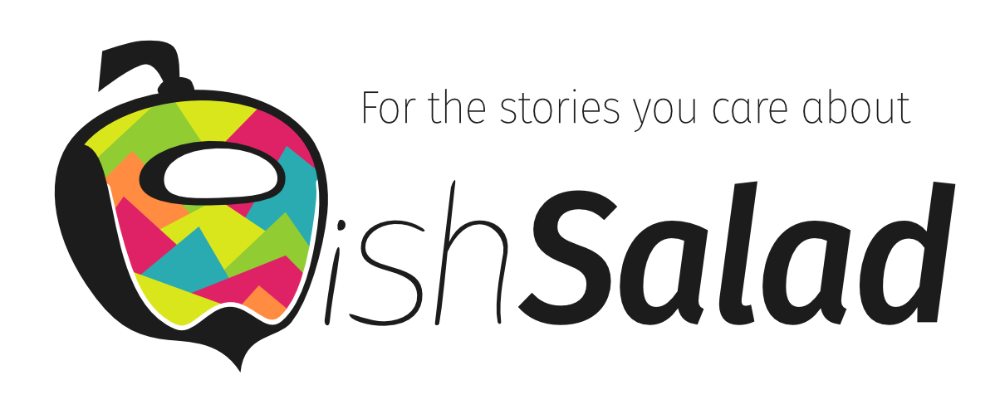

Introduction
This book is an introduction to the WishSalad project.

It's divided into different parts, starting with a series of articles explaining the key aspects of the project.
If you don't know what you are looking for you should probably start by reading the articles.
The WishSalad Experience
The Technology Gap And WishSalad
I have mixed feelings about our current technology.
We use digital tools every day that were unthinkable a few decades ago. But at the same time, our tools fall short all the time in situations well within consumer technology's reach.
The gap between existing tools and technology's full potential is not always obvious. Present tools make us feel productive. And without anything else to compare them against, we might think their limitations are unavoidable.
But the gap is there and is much larger than you would expect. And once you learn where to look, it's impossible to ignore the opportunity costs of not having better tools.
Tools help us boost our abilities to do better in the stories of our life. And we deserve tools that unleash technology's full potential to help us thrive in the stories that really matter.
Why are we stuck with mediocre tools?
In the early days of the digital technology revolution, people just wanted to get a better version of the tools they already had.
Their old medium became digital, getting faster, more powerful, and more connected. But it was essentially the same medium using the same underlying paradigm.
The central elements of this digital medium were what we would call Apps today. And little by little, it became clear that there should be an App to deal with every single low-level aspect of your stories. Or even better, more than one.
Here, have a few Apps to deal with messages. They are all different and tailored for specific situations, but not quite. You want texts, we can do that too. Here you have a few slightly different options.
Having isolated Apps that focused on every detail of your stories seemed like a good idea at the time. And it was obviously better than the previous analog tools.
But making you more productive with the low-level aspects of your stories stuffed them with more and more details.
And the problem with too many details is that you usually care about a particular text or message only in the context of a larger story. But the moment you ask for help with its high-level aspects, you are on your own.
No, sorry, we cannot help you search across all the aspects of your project. No, you cannot view the big picture of your trip. Forget about a custom tool for this task you, and only you, do every day. Yes, even if that would save you countless hours and mistakes.
Creating Apps is expensive. Therefore most Apps are versatile enough to be used across multiple situations by many people, sharing the costs.
And Apps usually achieve this by working with low-level isolated aspects of your stories. As the high-level ones are more specific to each individual story and therefore have fewer sharing opportunities.
But that's not the only reason why most Apps have a very narrow view of your world. Stories are related to each other, and this brings its own share of problems.
For example, the story of your trip is related to the story of your personal finance. Both share some elements, as expenses on the trip are part of your finances.
Imagine you have two Apps, one to manage your trips and another to manage your money. You should be able to introduce an expense once and have it available in both Apps for any future use.
For that, they would need to share an integrated digital representation of your stories. In particular, a shared representation of that specific expense.
The problem is that Apps usually have their own internal digital representation tailored to the aspects of the stories they care about. So you end up with multiple isolated representations of some elements of your stories. Keeping two isolated copies of your trip expenses, one on each App.
And yes, that's not ideal, but it's not the end of the world either. You would have to do double work, ensure you keep any changes in sync, ... but you can deal with it.
But wait, the App of your bank is clearly interested in those expenses too. Oh, and remember that room you shared with a friend on the trip? He uses another App that is also interested.
This gets quickly out of control.
So, how do we currently solve this problem? You guessed it, forget about the trip App that lets you manage every aspect of your trips. Instead, you have a bunch of isolated Apps for every low-level aspect.
Multiple Apps for different conversations before and during your trip. Other Apps to manage reservations, pictures, expenses, texts for your diary, or information about the destination, ...
You get the idea. You have to deal with multiple Apps that know nothing about your trip. And therefore cannot help you with any of its high-level aspects.
And this happens for most high-level aspects in any of your stories. You are lacking the most relevant tools. The tools that would really help you achieve better results with less effort to truly shine in your stories.
Is there any hope?
On the current App model, we are stuck on a local minimum. Within its constraints, some problems just cannot be solved by incremental improvement.
And there are even more problems with the current medium that need to be addressed. Like the excessive power of the App owners, that creates privacy, control, and social issues.
The solution to all of these problems cannot be just incremental. We must break with the old digital medium and the limitations of the App model.
I believe that the best way forward is to create a new digital medium for your stories.
I want a new medium that squeezes the full potential of the current technology.
We need a new medium designed from the ground up to help us thrive in the stories that matter most. And that fixes the most pressing issues we currently have while keeping the benefits of our current tools.
We deserve a new medium where our stories look like salads that freely mix all their aspects instead of treating each of their details as isolated ingredients.
I wish for a new medium that looks less like an office desk full of papers and more like a personal robotic genie.
And I want you to wish for it too.
It's time for a new digital medium, the WishSalad medium.
And I've created the WishSalad project to make it a reality.
The WishSalad project
The main goal of the WishSalad project is to ensure you have the tools you need to thrive in the stories you care about.
This includes digital tools. And that's precisely the role of the WishSalad medium, to let you have better digital tools.
But that's not the only kind of tools your stories need. Mental tools are even more important than digital and physical ones.
Mental tools live in your head. They are the ideas that guide you through your stories. The different strategies you have to approach a problem. And the knowledge of what to do and how to do it.
And, of course, they often rely on digital and physical tools. So with a better set of digital tools, you can also get a new set of better mental tools.
But mental tools are not only restricted to individuals as they are the base of how communities work. Communities have various cultures, rules, processes, ... And all of them are mental tools that help move these shared stories forward.
Most of your stories are shared stories. So to thrive in them, you need to be part of thriving communities. That's why the WishSalad community is a big part of the WishSalad project.
The WishSalad community is a big shared story on the WishSalad medium that serves as a home for many smaller sub-communities. All of them are bound together by a shared culture.
A culture that fosters collaboration and understanding instead of division and confrontation. That is based on the ideals of rational and scientific thinking instead of the basic tribal instincts.
A general introduction would be the concept of Idea Lab explained in this article. And we can see it as the Lab aspect of the WishSalad communities.
This was a short introduction to the most relevant concepts of the WishSalad project. But you can continue with the rest of the articles if you want to understand the full potential, how it would be to work with the new medium, and many more details.
A Medium That Flows
In the previous article, we introduced the WishSalad medium. Now it's time to start discovering what it really is. But let's start from the beginning.
Your stories can flow
We have seen that isolation is the core idea behind the current App medium. In the WishSalad medium, we replace it with the principle of free flow.
In WishSalad, different aspects flow into a story. Each one is represented by elements of the story that play different roles. And together, they define a story that evolves over time.
Stories can flow into other stories too. That is, a story can be an element of another story and play a role in it.
For example, you can think about the story of a friend. In the WishSalad medium, it can have multiple aspects: One aspect reflecting your conversations with him. Other for the pictures he appears on. Another one for trips you have shared together. And one final aspect as an email contact. And all these aspects, and many more, are part of his story with you.
Now let's focus on a more modest story, the story of a single email message you receive from your friend. This story can have many different aspects and elements. In particular, the story of your friend will be an element of the story of the message. Where it will play the role of the sender.
Here we can really see the difference with the current medium based on isolated Apps. An email App has representations for both stories, the message, and your friend. But it's only representing the email contact aspect of your friend's story. The other aspects don't exist as far as the email App is concerned.
In WishSalad, the element playing the sender's role in the message's story is much more than a simple email address. It's the whole story of your friend because all the aspects always flow together.
When viewing the message, you are only interested in a narrow aspect of your friend's story. But you can flow into the whole story if you need to and focus on something different.
You can imagine this flow as navigating through your stories. Moving your focus from one aspect to another. Or even to a different related story.
You start by viewing the email you received. From there, you navigate to the sender, the story of your friend. Now you navigate to a picture of him with another friend. And you finally move to the story of the other friend, focusing on your conversations with her.
All the stories are connected, and they can flow freely. Your ingredients are not isolated anymore, and you can finally enjoy the whole salad.
The kind of navigation we just show is only the most basic type of flow. You can think of it as flowing through simple activities that let you visualize your stories.
Activity flows
Your stories would be something static if it weren't for the activities that move them forward.
An activity is anything you do in a story. But in this article, we will only refer to the activities you do with digital tools inside the WishSalad medium.
We just have seen a few examples of simple activities that use a tool to visualize an aspect of your stories. But in general, activities can use more advanced tools to do anything you need.
We have also seen our first example of an activity flow. The simple navigation from the visualization activity of a message, through other visualization activities, finishing with an activity that showed your conversations with another friend.
In general, an activity flow is created when we reference an element from an activity in another activity.
Remember the previous example where we navigated from a message visualization activity to its sender activity? In that case, the new activity referenced an element from the previous one.
This kind of activity flows, the navigation flows, are the most common type you will encounter when you start in the WishSalad medium.
They will probably look very familiar, as they are an extension of the navigation we usually do on the web. But instead of navigating between content pages, you navigate between activities, possibly using different tools.
This is very different from the rigid workflows you are used to in most Apps. Your tools and aspects are not isolated anymore, and navigation activity flows let you progress in your stories freely.
This freedom to progress through activity flows that combine various tools is extremely useful. Each step of the flow can work with something different following your story. It feels like building a tool as you go, tailor-made to what you are working on. And it already covers part of your need for higher-level tools.
Activity flows are a core concept in the WishSalad medium. And we just scratched the surface of how powerful they are.
Dynamic and reusable flows
TODO Work on improving this section, apparently it's still hard to understand.
One interesting property of the WishSalad medium is that activity flows can be dynamic. You can navigate back and modify something on a previous activity. This can dynamically update the following activities in the flow to reflect the change.
For example, imagine you start with a search activity where you find a few photos. You select one of them. And navigate to a new activity that uses a tool to apply a filter to the selected photo.
Now, you could come back to the first activity and select a different photo. Or even perform a different search. And the following activity will apply the filter to the new photo.
Most tools will dynamically update to changes in their activity flow if they don't have any external consequences.
But now imagine that, after applying the filter, you navigate to a new activity to save the modified photo as a new story. In this situation, instead of dynamically updating, the activity would ask you if you want to perform the action (saving as a new story) on the new photo too.
This dynamic feature of the activity flows is really useful, but navigating back and forth all the time is not ideal. That's why there are many different ways of visualizing activity flows adapted to various uses.
We have already seen the navigation view, which is a common way of working. But you can use the stack view, where you can see all the activities at the same time, one on top of the other. Scrolling up and down if they don't fit on your screen.
Other ways to visualize an activity flow are in the form of expressions, pads, timelines, graphs, ...
But for now, it's enough to realize that there are convenient ways to visualize and work with activity flows that suit different situations. Like the stack view when we want to perform dynamic changes.
Another thing you can do with dynamic activity flows is to create dynamic elements for your stories. Your stories become dynamic!
After performing an activity flow, we can decide to save the result as a dynamic element in a story. For example, we could start with an activity that searches for the ten most recent photos you appear on. Then, we navigate to another activity that applies a filter to each photo. We move to another activity that creates a collage from the pictures. And we finally save this collage as a dynamic element.
As the first activity is a search, the results of this search can change over time. The most recent photos change as more photos are taken. And therefore, the collage is dynamically updated when that happens.
Dynamic elements can appear anywhere. You can insert a dynamic chart in a text document (a story with a text aspect) that automatically updates based on other stories. You can define the properties of the elements of a graphic design using dynamic elements. For example, to create the previous dynamic chart.
The possibilities are endless, and we will explore them in the future.
Finally, you can use activity flows to create new tools. This will require many articles on its own, but let's start with something simple, the reusable activity flows.
The idea is that, after creating an activity flow, you might want to reuse it in the future with a few changes. To do that, you can convert it into a reusable activity flow. That's a new tool that can perform the whole activity flow in a single step.
That's great! But what happens when you want to change something in the flow? No problem, just mark any elements you need as configurable. They will be added to the tool's user interface, and you can provide different specific configuration values for each use.
And editing the user interface couldn't be simpler, as it's defined using a vector graphic design. That means you can edit and customize the interface as if it were any other vector drawing. Using precisely the same tools.
Creating new tools in WishSalad can be that simple.
Flow across devices and users
We have seen that Apps do many things wrong, but one thing they got right is to move more and more to the cloud. Well, that has many problems too, but at least they let you taste how it feels when stories can freely flow between devices and users.
Can the WishSalad medium offer the same, or even better, without the problems? For starters, it goes in the opposite direction, but let's see.
Instead of putting the tools and stories on the cloud, the WishSalad medium puts them on your devices by default. And everything else is optional.
Your stories and tools should be under your control and not depend on ad-based "free" services or subscriptions that lock you in.
But at the same time, it lets you synchronize all your devices automatically and share your stories with others effortlessly. Not only that, you can sync, share, and collaborate on all kinds of stories and activities. Improving on the limited cloud-based collaboration approaches.
And it does this using direct connections between devices, with help from other members of the WishSalad community. No need for servers.
But what happens if some devices or users are not connected all the time? No problem, you can work offline and collaborate with others, and changes will sync when you connect with them later.
And can't this create conflicts if the same story is changed from different places? Isn't a server needed to solve these conflicts? Yes, simultaneous changes can create conflicts. And the WishMedium will solve them automatically without severs.
Of course, like current cloud collaboration Apps, it cannot ensure the result is always what you want. For example, if two people change a text in parallel, the resulting text might include parts that make no sense and need to be fixed by hand.
What all current tools ensure, including the WishSalad medium, is a sensible result that doesn't break anything. And that can be fixed when needed. And, when having something broken is not an option, the WishSalad medium has you covered with more advanced tools like branches.
All of this is amazing. But with a cloud server, you can synchronize even if the devices are never online at the same time or a direct connection is not possible. And on the WishSalad medium, you can do it too.
WishSalad users can share storage and bandwidth with each other. Let's say you want to send some changes to a friend A that is currently offline. You can instead send the changes (encrypted) to a shared friend B that is online. This way, even if you disconnect, A can retrieve the changes later from B.
Of course, all of this is automatic. And you can do it with more users to ensure the changes arrive, with what we call A's personal community. And B might not even be A's friend, just a user that reciprocally shares storage with A.
No servers are needed at all. Your stories can flow freely in the WishSalad medium.
But in some cases, having a WishSalad server or using a cloud service might be more convenient. And, of course, the WishSalad medium supports your own home server, a cloud server, and even using standard cloud storage services.
And what happens with stories shared by many people? It can be the story of a group of friends, a team at work, or people with a shared interest. In WishSalad, these shared stories are called communities.
And the WishSalad medium ensures that communities can flow as freely as your personal stories. But we leave understanding all the power of communities for future articles.
TODO Integrate a quick summary of the following ideas into a last section, otherwise it's going to get too big.. The rest should be moved into Experience Design (just copy the structure fo now) and we might explain it in detail in future articles.
Simple flows into powerful
Consumption flows into creation (reference to previous description on tools, from reusable activity flows).
…
Progressive learning and use modes (also refer to previous examples)
- Simple stories flow into powerful ones
- Creation and sharing is at the same level as use and consumption
- Using tools flows into creating new ones, more adapted, capable and useful
- Consuming content from stories flows into creating and sharing it
- Reuse and remix, compose and build upon, improve, …
- Communities fuel creation and sharing
- Novices flow into experts (universal, powerful and incremental design - worthy of learning principle)
- Progressive learning that reuses previous knowledge and is immediately useful with low effort
- Progressive use modes that cover from novices to experts, can be mixed freely
- Creation and sharing is at the same level as use and consumption
Old flows into new
- The new WishSalad medium can flow from the old one (incremental adoption principle)
- Useful even when used by a single user by itself
- Useful even when manages only small parts of your stories and the rest lives in Apps
- Can integrate with the old medium (where possible) and make it more useful
- Free to use and improve
- Without all or nothing bets from risky investments. Healthy growth and adoption.
The Genie In Your Workspace
All the concepts described in the previous articles seem pretty interesting, but what is it like to use the WishSalad medium? Let me introduce you to your new workspace and the genie that lives there.
When working with the WishSalad medium, you do it inside a workspace. It's your interface to the medium, and it contains your activity flows and other features.
It will probably look very familiar, as it reuses many visual concepts you have already used. For example, it has top and bottom toolbars, like many operating systems and Apps. And a central space for your activities.
You can divide the central space with different tile layouts or cover it with a single tile. And each tile can display a single activity flow or use tabs when you need to have more. You can also have floating flows similar to windows in the current platforms, but it's better to use this sparingly.
That's a very flexible way of organizing your activities, and it's mainly possible because you don't have to deal with activities isolated in Apps. It mixes the power of tabs you already enjoy in the browser with the flexibility of tiles and floating flows.
Now let me show you how to work with a single activity flow. You can create a new one, for example, opening a new tab in a tile. And you are immediately greeted by an activity provided by the WishSalad genie.
The genie is like your personal assistant in the WishSalad medium. Always there, ready to help your activities flow. Making appear whatever you wish, instantly, no matter where you are. Besides you whenever you need it, in this and many other situations. And sometimes, it even floats like a real genie. How cool is that!
But let's come back to our example. When you start a new activity flow, the genie greets you with an activity to help you find the story or tool you want to use next.
First, you will see whatever the genie thinks is more relevant in the current context, like recently used stories, tools, general categories, and more. From there, you can choose something or navigate to something else. But sometimes, it's just better to ask for what you want using the provided search and autocomplete.
From there on, the genie is always present whenever you want to move to another activity in the flow. And it also supports you in the current activity and anything else you might decide to do.
In the WishSalad medium, tools try to focus as much as possible on their core task and delegate everything else to what we call support activity flows. And as you guessed, the genie is behind them too.
For example, a tool doesn't need to provide a way on its interface to give values to all its configuration options. And it will do it only for the essential ones.
For the others, the genie will float over your current activity showing a support activity flow. This flow can be as simple as a single activity or as complex as you need.
If you need to configure a date, it will show you a simple calendar activity. But you can indicate to the genie that you want something else, and it will move to a tool similar to the one we use to select the first activity.
From there, you can search and navigate to a different date selection tool. Or you can find a story that includes the date you want to use as a configuration value, like the deadline of a project or a person's birthday.
But remember, support flows are just regular activity flows. So you can do anything you need in them. For example, you could call the genie to provide an attachment for a message.
The first thing you do is to find the picture you want to attach. You navigate to a new activity in the support flow to edit the colors of the photo. And form there, to another one to draw and write on top of it.
Finally, the result is attached to the message, and you can continue editing the text in the main activity. Simple, powerful, and with minimal effort.
You can now select and create configuration elements as you go, but sometimes you need to be even more dynamic. Let's see if the genie can help you here too.
Imagine you are working on a graphic design, and you are defining the size of a rectangle. You might be creating some data visualization, and you determine this value using a support flow that calculates the average height of a collection of people.
That's useful, and at some level, similar to the example of the photo before. But what happens if the collection of people changes over time? For example, because you want to use the basketball team that is currently first in a league.
No problem, the genie is there to help you. In a support flow, you have the option to save the value as dynamic. And the genie will take care of updating it using the same flow if something changes.
Now you can create dynamic data visualizations!
You can use support activity flows almost everywhere. And we still have to discover their full potential. But for now, you can get a good idea of how simple and familiar support flows can look most of the time and how powerful they can get when needed.
We have seen how the genie helps you find what to use to start a new activity flow. And how convenient support flows are inside an activity. But what about progressing from one activity to the next in a flow?
The genie can help you to navigate the flow implicitly and explicitly. Let's see how.
This is going to be long, try to be as concise as possible from the beginning. Create texts inside the experience design as needed for the details (leave a sketch of the ideas there) and reference it when needed.
Workspace
- Mainly a set of activity flows, with other things to support them
- Top bar
- Workspace Genie
- Widgets
- Are micro activities (display,buttons, ...)
- Managed by the workspace, current activity, and current selection
- Bottom bar
- More widgets, in general more general things like background tasks, notifications, system info, launchers, minimized activity flows, ...
- Sidebars (optional)
- Tiles
- Can include tabs
- Various layouts (1, 2, 3, 4)
- Floating activities
- Perspectives
- An specific arrangement of the tiles, visible activity flows, and other configurable options in a workspace
- They let you quickly change perspective within a single workspace
- Activity flows (sometimes simply called flows, others just activity)
- In tiles, tabs, floating, minimized, hidden, …
- In special situations can be shared between workspaces, and even with other users. This is deeper than real time collaboration in a story. Which doesn't share the activity and maybe even the tool, only the story and can be only specific elements of the other activity state, like the cursor.
- Pads
- A collection of (hierarchical) names associated with the results of activity flows. They are visualized like a pad.
- Sometimes called helper pads, scratch pads and work pads, in other situations.
- Special pads
- They have custom graphical and keyboard interface for quick use and access, and they can be created dynamically
- Extended clipboard
- Favorites
- Recent, frequently used, … (dynamic)
- User pads
- Notes (like any other story)
- Workspace manager
- Internal configuration options (layout, all activities, perspectives ...)
- Other workspaces, move things between them
- Workspace timeline
- Powerful undo/redo
Activities, flows, and the genie
- TODO Special ways of working in WishSalad
- The Genie is associated with all the support around the flows, support activities (search a tool or an element, navigate, … dynamically update, ...) and flows.
- Usually performed in a floating region, like a floating genie. We call them floating activities and flows.
- There are implicit floating support activities, like tools that float around a text selection, or when you select an element in a collection, floating menus on hover, …
- Nested floating support flows are usually displayed in a special view similar to a stack, with the nested flow shown below.
- Also called helper/sub activities and flows.
- Usually performed in a floating region, like a floating genie. We call them floating activities and flows.
Not As Crazy As It Seems
20210324143936
If you read the articles and the other content in this book, at some point, you will inevitably come to a conclusion: This is crazy!
And you would be right. Well, sort of. Or maybe not at all.
I've invested countless hours thinking about this problem and designing a solution that, while ambitious, is not as crazy as it seems at a quick glance. Here you can find some of the reasons why.
The first thing you will notice is that I'm trying to replace most apps with the WishSalad medium. Not only that, I want it to work everywhere, desktop, mobile, VR, ...
But wait, I'm also trying to replace the web, the social networks, and countless other services with the WishSalad communities.
And if that wasn't enough, I want to develop new mental tools and a new culture for the communities. So that we can all do better in our personal and shared stories.
How can I not see that this is crazy?
There are two kinds of reasons, some are technical, and others are about strategy.
Technical reasons
As big as the WishSalad medium seems, most features emerge without difficulty from a core system. And I've put great effort into designing a minimal core system composed of very few pieces.
It has been a lot of work to simplify the design, iteration after iteration, always trying to do more with less. But after many years of distilling the core concepts, I'm convinced the simple ideas that form the core of WishSalad are up to the task.
And by no means think most work is already done. This is just the beginning. The core has few pieces, but they are all very technically challenging.
During these years, I've learned in depth about all the areas required for the core and prototyped countless solutions.
A great high-level design means nothing without the technical knowledge to implement it. And many times, discovering what's possible in the implementation can guide you to a better general design.
And, as with any research project, most of the things I've tried have failed. What remains are the things that have passed the test of time.
After this journey, I'm convinced that implementing the core ideas of the WishSalad medium is feasible. It might require a long time from a single person. It might even require a small team. But it's not an absurd amount of work, in part thanks to the work others have put in great libraries.
Apart from that, on a technical level, many things can be implemented incrementally once the bases are there. The core, and everything on top of it, will never be finished. And can be incrementally be improved over time.
Strategic reasons
But the difficulties with such a big project are not only about creating a great product, as there are many strategic factors to take into account too.
The mainstream approach in situations like this is to create a startup and try to find investors. This would pay for the development and promotion of the product. But this is a terrible strategy for the WishSalad project.
First, because users need to control their tools. And that means the WishSalad medium must be an open-source product. And open-source products, unlike services, cannot provide the crazy returns investors want.
But we can see this from the other side too. Having an open-source product makes it much more attractive to users, helping adoption.
The other problem with startups is they require rapid growth to satisfy the investors. Here, again, we go in the opposite direction with an incremental adoption strategy. We will see below what that means.
The last difference with startups is long-term sustainability. The idea in startups is usually to grow fast or die fast. And even if you survive, it's considered a success to be acquired by a larger company that will completely transform or even end the product.
But this goes against the WishSalad project goals. Because without long-term sustainability, it's impossible to keep providing users with the tools that they need.
Moving to the WishSalad medium is a long-term investment. Once you try how good things can be, you won't want to go back. But this requires the guarantees that long-term sustainability and an open-source product provide.
This long-term investment is what can drive users to support the project and make it sustainable. But this is not something that can be improvised, and it needs to be part of a larger strategy.
Now let's move to the incremental adoption strategies we introduced before.
A big part of the WishSalad medium is about helping you with shared stories. Share stories live in communities, and they share many features with current social networks. And in particular, they share something called network effects.
A product depends on network effects if the value you get depends on the number of people using it. That means established products give you more value than new products, even if they are worse. And for a new product, breaking this negative loop is really difficult.
The strategy we take to solve this problem is to create value for the user outside of the communities. The WishSalad medium is designed to be much better than the current medium, even if you are the only user.
The strategy is to drive adoption from individual users that use it for themselves. And once they are already using it, the network effects kick in.
The WishSalad medium would be even more valuable to them if others used it. Therefore they have an incentive to promote it.
And there are no barriers for these new users to adopt it because they can profit immediately. Even if the only other user they know is the one that introduced them to the product.
We have turned the negative loop into a positive one. Early adopters are rewarded and help drive growth.
This solves the problem with the network effects. But what about the issue of moving to a new medium? If users need to leave everything they use behind, that's going to make adoption extremely difficult.
The strategy here is again incremental. You can move into the WishSalad medium little by little and still get the benefits where you use it.
But the incremental strategy goes farther. The WishSalad medium can integrate with the old medium to enhance it and make it more useful. Of course, always within the constraints of what the old medium allows.
This strategy also allows incremental development, as you don't need all the features and integrations from day one. You just need a good enough core that can support healthy growth and adoption.
Realistic after all
I hope I've changed your mind, and you can view this project as something reasonable now.
All the hard work, the countless redesigns, the time spent looking for better strategies, ... it has finally paid off.
The WishSalad medium design is simple enough to be feasible to develop and maintain. The principles and strategies that guided the design can create a positive feedback loop for its adoption. And it doesn't seem as crazy anymore.
The transition into a new medium is essential and unavoidable if we don't want to be stuck with a technology that limits our potential. And the WishSalad medium is a realistic way to get there.
A Recipe For The Universal Salad
TODO
Quick overview of everything that makes the representation of the stories. All of this should be presented, even if we leave the details for future articles.
Elements and roles. Aspects are a way to talk about a group of elements with some roles (and more). Identifiers, … References.
Some things are primitive: primitive elements, roles, tools, … But most things are represented as stories. New roles, aspects, elements of any aspect, … Also activities (reference to tool and a story of it's state) and activity flows. Automations, templates, … Tools are represented as automations and graphic designs.
Structural change representation and integration. Conflict free structure with creation rules.
Versions, keeping the whole history and compaction, …
Parallel trees, branches and log structured database.
Svg Animation Ideas And Tests

Foo